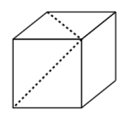

KÜPÜN İÇİNDEKİ AÇI

Noktalı çizgilerle gösterilen açı kaç derecedir?
Cevap:
Noktalı çizgilerin uçlarını birleştirerek bir üçgen oluşturalım. Bu üçgen eşkenar üçgendir. Şekilde görülmeyen kenar, küpün sol yan yüzünün, diğerleri üst ve ön yüzünün köşegenleri olup üçü de eşittir. O halde açı 60 derecedir.